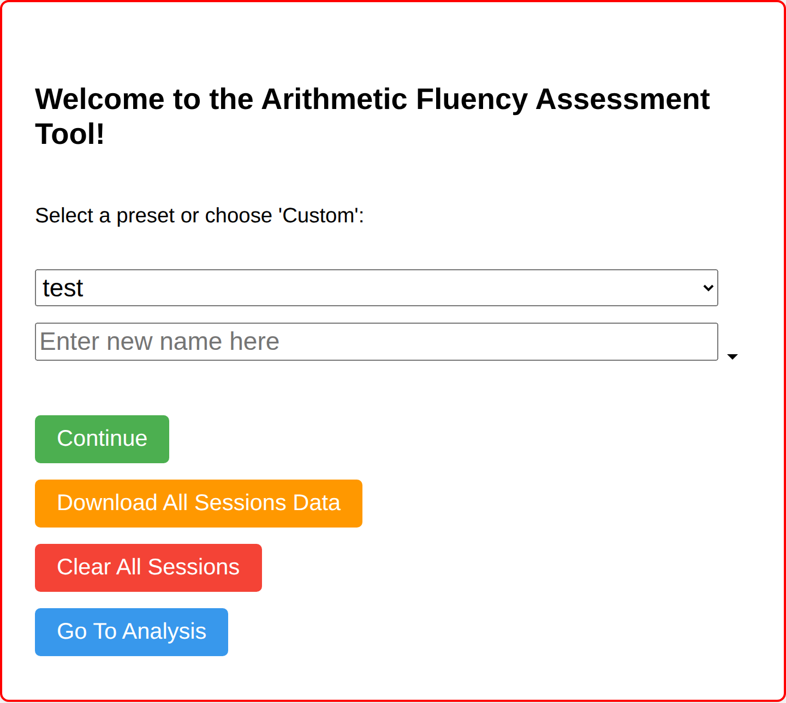
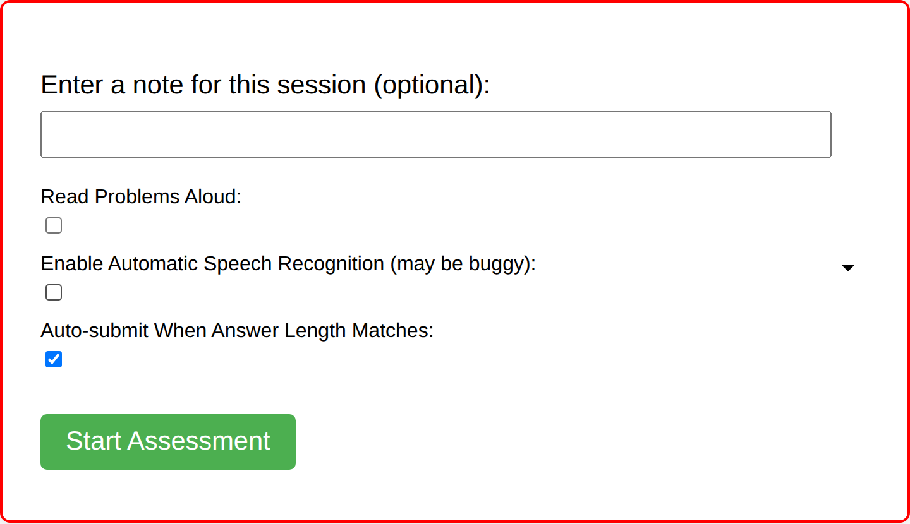
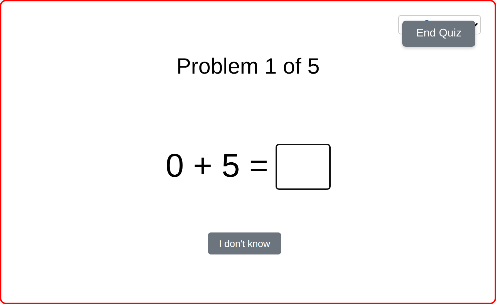
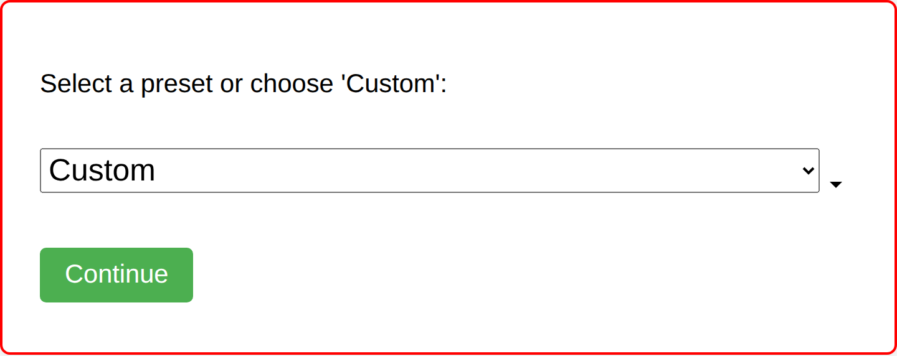
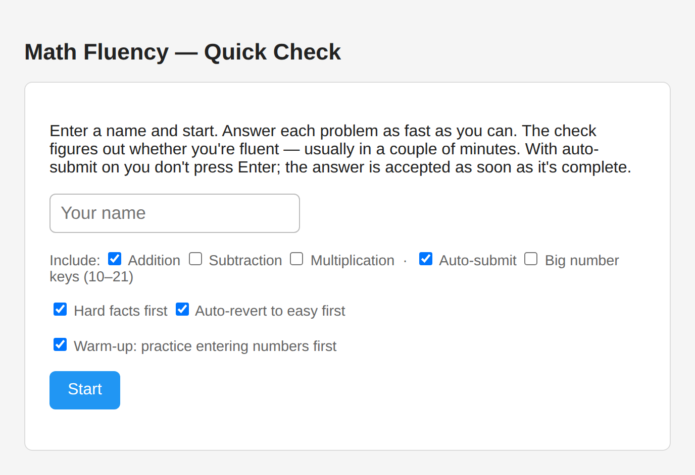
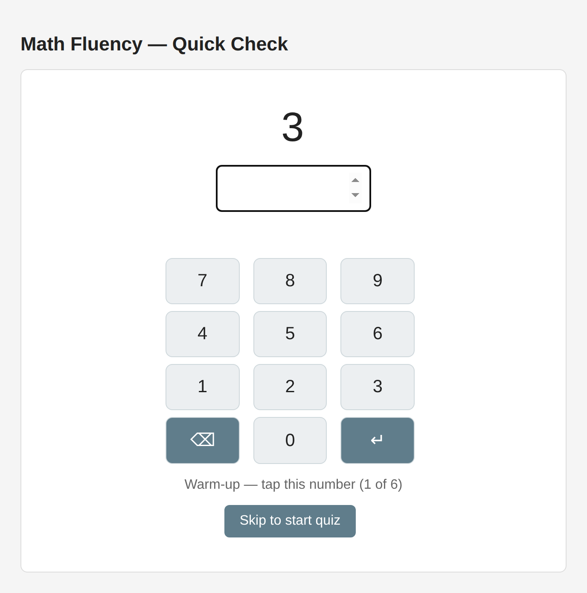
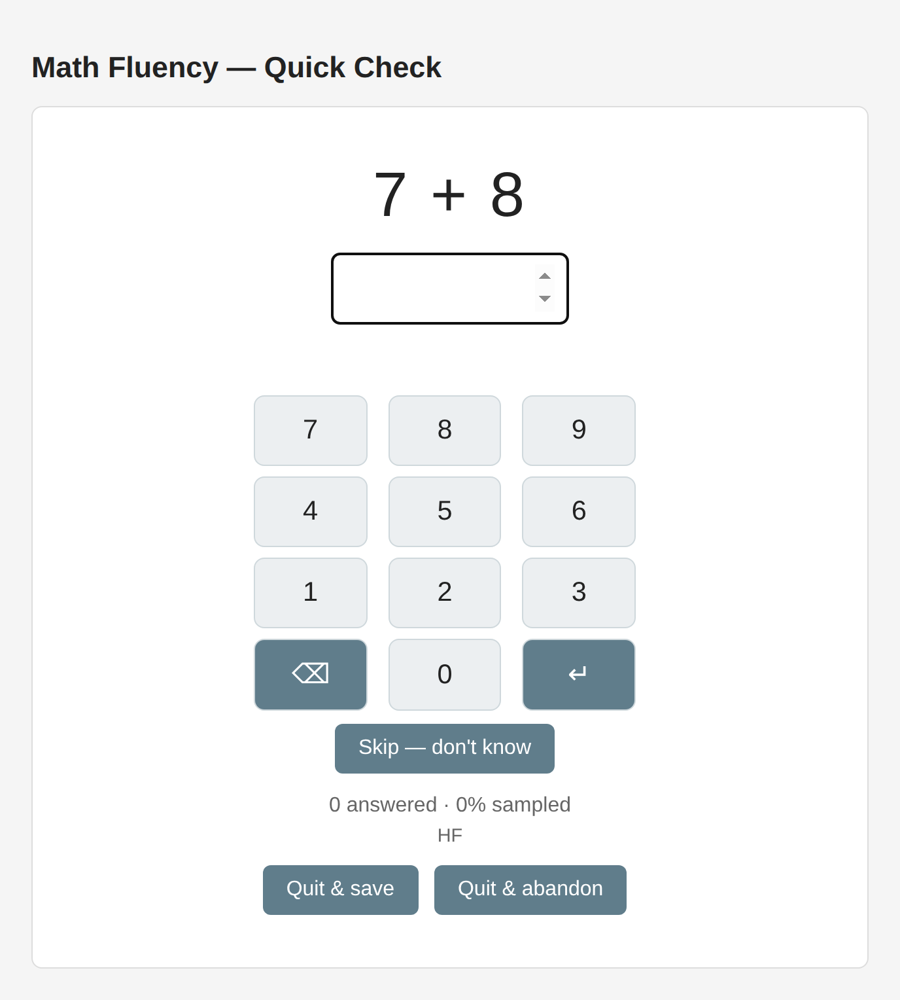
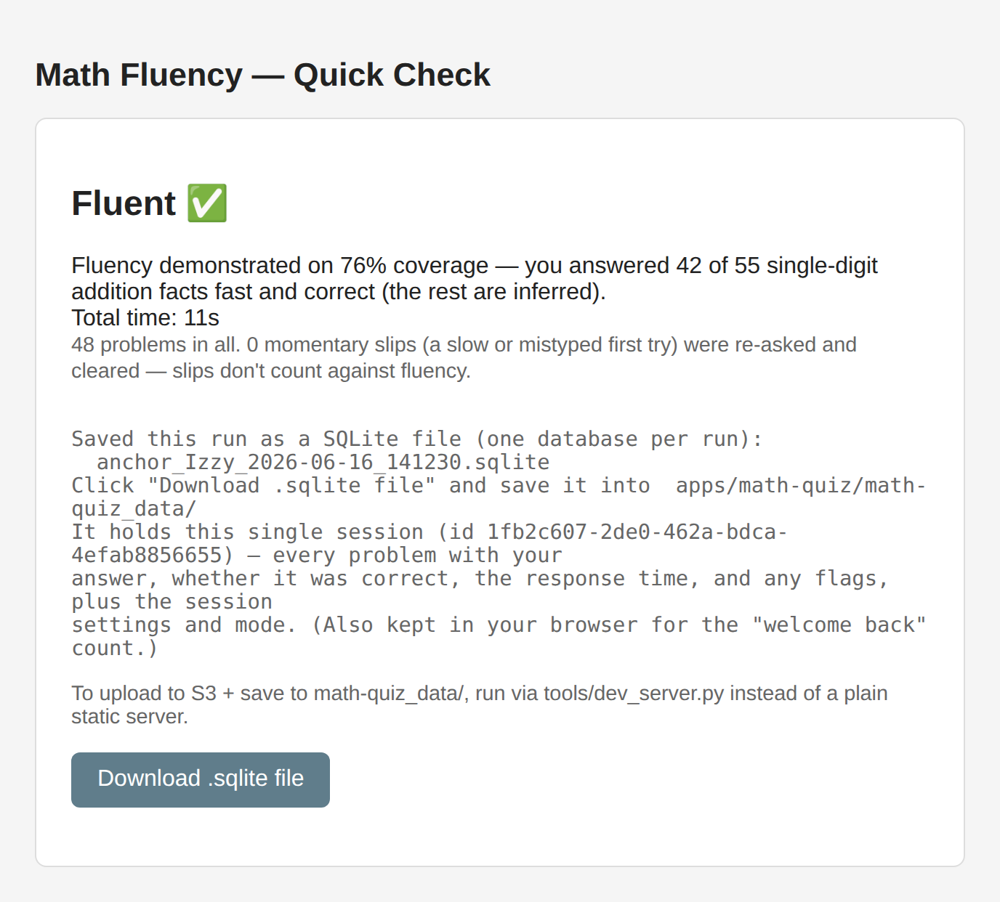

Math Quiz — Old vs New (“anchor”) Comparison & Integration Plan
A side-by-side of the old quiz (math_quiz.html, JSON storage) and the new fast-fluency
“anchor” path (anchor.html, per-user SQLite), plus a plan for folding the recent work back into the
mature three-part app (quiz + fluency + analysis). Living document — updated as we iterate.
docs/SPEC.md (what the app is — rubric, principles, data model) and
docs/PLAN.md (what to build next — phases, tasks, decision log).
This report is the screenshotted comparison + the snapshot of the decisions that seeded them.
★ Executive summary
Three distinct build periods produced two coexisting surfaces. They don’t conflict — the new work is purely additive scaffolding — but they have not yet been merged into one product.
Old The mature app
- Three pages:
math_quiz.html(quiz),math_fluency.html(fact-by-fact tracker),math_analysis.html(heatmap + flag review). - Storage: session JSON in browser
localStorage+ download; dashboards rebuild an in-memory DB from those JSON sessions on every load. - Strengths: complete loop (collect → track → analyze), flag/notes workflow, multi-session history, well-tested.
- Built by: Randy (original) + CT/CT (fluency + flags + analysis).
New The anchor direction
- One page:
anchor.html— “demonstrate you’re fluent in ~2 minutes,” keypad-first, warm-up, glitch tolerance, predictive vs. thorough mastery. - Storage: per-user SQLite (sql.js), auto-persisted to IndexedDB, exported as
.sqlitefiles; a write-mode switch keeps JSON as optional interchange. - Engine: DOM-free modules (
engine/) + a deterministic simulation + adaptive selector, proven by tests before any UI. - Built by: Randy + cloud agent (this June’s “goal” thread).
1 Three periods of work
Imported into fof-mono on 2026-06-03 from the external math-quiz repo
(47 commits; contributors CT & Randy True), then extended here.
Period 1 — Randy’s original JSON
The core browser quiz: configurable arithmetic, problem presentation, answer entry, session JSON, sound effects. The foundation everything else builds on.
Period 2 — CT (CT): fluency + analysis + flags
Added the fluency tracker (math_fluency.html), the analysis dashboard
(math_analysis.html: response-time heatmap, per-problem drill-down), problem flagging/filtering,
duplicate handling, and an “I don’t know” flow. Randy later did a thorough review/cleanup pass (P1–P8 fixes,
documented in docs/code-reviews_2025-12_CT-work/ and 2026-06-11_math-quiz-review.md).
Period 3 — Recent “goal” thread: anchor + SQLite + engine SQLite
A high-level “goal” run produced: an adaptive selector + deterministic simulation over
learner profiles; an explicit assess vs practice mode framing; the anchor page (fast fluency
demonstration with keypad, warm-up, glitch tolerance); a per-user SQLite store + IndexedDB persistence +
write-mode switch; the addition categorization model (canonical vs expanded); a local dev server for S3 upload; and a
combine_sqlite.py merge tool. First real-learner runs (G1, G2) captured 2026-06-15.
Source docs: 2026-06-14_adaptive-and-profiles-goal.md ·
2026-06-15_assess-practice-modes-spec-and-plan.md ·
2026-06-15_guinea-pig-findings.md · single_digit_addition_categorization.md.
2 Visual comparison
Captured headless from the live pages (hermetic local server; CDN libs served from
tests/node_modules). The new page is keypad-first and self-explaining; the old page is a configurable
assessment with audio/speech options.
Old math_quiz.html — configurable assessment




New anchor.html — fast fluency check


WarmupAttempts table; excluded from timing).

.sqlite.3 Architecture & feature comparison
What each surface does and how it’s built. “New” items are additive — none replaced old files
(the branch diff vs main is all insertions).
| Dimension | Old — math_quiz.html & dashboards | New — anchor.html + engine |
|---|---|---|
| Primary purpose | Configurable practice/assessment; collect sessions; review later in dashboards. | Demonstrate fluency fast; explicit assess mode, with practice mode designed in. |
| Pages / scope | 3 pages: quiz, fluency tracker, analysis heatmap. | 1 page (anchor) + DOM-free engine/ + simulation/; no dashboard yet. |
| Answer entry | Free-type box; optional speech recognition; read-aloud. | On-screen calculator keypad (default), optional big-number keys; physical typing works. |
| Problem selection | Preset/random within configured range; no adaptivity. | Curated hard-first plan (addition) + adaptive selector; auto-revert to easy on struggle. |
| Fluency logic | evaluateFluencyStatus (gray/red/yellow/green/blue) computed in the fluency page. |
Same logic, reused DOM-free; plus predictive & thorough mastery determinations. |
| Glitch / slip handling | None — every attempt counts as-is. | Re-deliver-and-confirm: a slow/wrong first try is re-asked later; if fast then, the slip is discarded. Warm-up discard of first ~2. |
| Storage | Session JSON in localStorage + downloads. |
Per-user SQLite (sql.js) in IndexedDB + .sqlite export; JSON optional via
write-mode switch. |
| Modality settings recorded | Audio/speech/auto-submit are session settings. | Operation, auto-submit, keypad mode, order mode logged; device/modality capture is a gap (see Q). |
| Tests | Unit (vm) + real-DB unit + Playwright E2E for the three pages. | Adds selector/simulation/assess-flow/segmentation/store/reevaluate unit tests + anchor E2E.
npm run test:all green. |
| Deploy target | Copy/paste into Webflow custom-code blocks. | Local only now (static server, or dev_server.py for S3 upload); no auth/deploy yet. |
4 Storage: JSON → SQLite (and the two snags)
The deliberate move from session JSON to a per-user SQLite database — why it’s better, where it’s drifting, and the cloud/local data-access gap.
Old Session JSON
- One JSON blob per session in
localStorage(math_session_*.json), plus a downloadable file. - Dashboards rebuild an in-memory sql.js DB from all stored JSON on each load.
- Good: dead simple, human-readable, the shared format other front-ends (Minecraft mod) already emit.
- Limits: no single canonical per-learner store; cross-session querying means re-importing everything; easy to lose individual files.
New Per-user SQLite
- Tables
Users,Sessions,ProblemAttempts,WarmupAttempts,ModeEvents— every trial with operands, answer, correctness,response_time_ms, flags. - Computed in-memory (sql.js) for speed; auto-persisted to IndexedDB keyed by username; manual
.sqliteexport/import as the cross-device escape hatch. - Evaluation is not stored — fluency is recomputed from raw attempts, so the algorithm can change and old
captures re-score (
reevaluate.mjs, static re-eval). - Write-mode switch:
sqlite-only(dev default) |json+sqlite|json-only.
anchor_<name>_<timestamp>.sqlite
(and uploads it to S3), while also appending to a cumulative per-user store in IndexedDB. So both already
exist — the design intent (one queryable file per learner) just isn’t the file that leaves the device.
Reconciliation (recommended): treat the per-run
.sqlite as an immutable capture / transport
artifact (perfect for handing a single trial to the cloud agent), and keep the per-user database as the
canonical store, assembled by merging captures. The merge tool already exists:
tools/combine_sqlite.py (schema-aware, canonical-schema selection, tested). The workflow becomes
capture per run → combine into per-user DB → re-evaluate.
.sqlite files + the
dev_server.py → S3 upload path exist: they get a concrete capture off the device to somewhere the
agent (or you) can pull it. Note S3 target is [S3-BUCKET] (the PII bucket) — appropriate for real-kid
captures; keep it out of [S3-FILES-BUCKET] and git. Open question: standardize a “drop a capture where the
agent can fetch it” loop (see Q5).
Data-flow, end to end
| Stage | Old | New |
|---|---|---|
| Capture | Append problem to in-memory session object. | Insert attempt row into per-run + per-user SQLite. |
| Persist | JSON → localStorage + manual download. | DB → IndexedDB autosave + .sqlite export (+ optional S3 via dev server). |
| Aggregate | Dashboard re-imports all JSON each load. | combine_sqlite.py merges captures into the per-user DB. |
| Evaluate | Fluency computed on the dashboard. | Recomputed from raw attempts (static re-eval) — algorithm-swappable. |
5 The fluency model (new work)
The conceptual machinery behind the anchor — and the shared vocabulary for adaptive selection going
forward. Canonical definitions now live in docs/SPEC.md.
8×6 as
8×5+8). Accuracy is table stakes, not the headline metric — the goal is to move past “gets them
all right” to “knows them cold,” so the primary signal is automaticity (speed) with accuracy as the rubric’s
floor. The app is not designed around accuracy: auto-submit accepts only the correct answer. Wrong entries are
still labeled, but accuracy isn’t what the product optimizes.
The rubric: red → yellow → green → blue
One stoplight-plus scale for fluency, applied at three levels — whole operation, category within an operation (the categorization buckets), and individual problem (with full cross-session history). Thresholds are adjustable & level-appropriate (not a fixed 2 s).
| Status | Meaning | Signature |
|---|---|---|
| red | Really doesn’t know it. | Makes errors, or so effortful it’s effectively unknown. Accuracy floor — below the accuracy bar ⇒ red. |
| yellow | Kind of knows it — not fluent. | Accurate on nearly all (odd slip aside) but slow/effortful; may use strategies. Needs practice. |
| green | Fluent / near-fluent. | Fast + correct recently; not yet enough data for permanent — keep collecting/practicing. |
| blue | Permanent — “in ice.” | Green sustained across sessions; known cold, unlikely to be lost. |
red↔yellow boundary = accuracy; yellow→green→blue = automaticity (speed + durability).
Code reconciliation: current evaluateFluencyStatus uses gray for low accuracy and
red for very-slow; the canonical rubric folds gray into red — a PLAN Phase-A task.
Single-digit addition categorization
Facts partition into five non-overlapping categories by the smaller addend, with a named hard subset.
Count each commutative pair once in the canonical set (smaller + larger) → 55 problems;
the expanded set adds turn-around complements → 100 problems total. Source:
single_digit_addition_categorization.md → engine/addition_segmentation.mjs.
| Category | Canonical | Expanded | Pattern / note |
|---|---|---|---|
| Add Zero | 10 | 19 | 0 + n — easiest |
| Add One | 9 | 17 | 1 + n, from 1+1 |
| Add Two | 8 | 15 | 2 + n, from 2+2 |
| Doubles | 7 | 7 | n + n, 3+3…9+9 |
| Tough 21 | 21 | 30 | remaining non-double facts, addends 3–9 — the deliberate-practice set |
| Hardest Six | 6 | 12 | subset of Tough 21, both addends ≥ 6, not doubles
(6+7,6+8,6+9,7+8,7+9,8+9 canonical; expanded adds 7+6…9+8) — overlearn last |
| Total | 55 | 100 | Hardest Six counted inside Tough 21, not extra |
Canonical vs expanded: canonical = one orientation per fact (3+4); expanded adds the
turn-around complement (4+3); doubles are symmetric in both sets. The anchor plan administers Hardest Six in
both orientations. Easy vs hard: a fact is hard iff max(a,b) ≥ 6. The selector
weights hard facts 3×. The same categorization will likely be reused for multiplication.
Two modes
- assess — learn about the learner fast (broad, hard-weighted, predetermined order).
- practice — deliver value in batches (default 10) with a known:unknown mix (default 50/50), reassessing between batches, not per problem.
- Mode is a first-class flag, logged with transitions in
ModeEvents.
Two mastery verdicts
- Predictive (fast/short) — infer mastery from a partial, hard-weighted sample → the anchor’s “stop here vs continue” prompt.
- Thorough (complete) — every in-scope fact attempted, correct, within
mastery_ms→ the “continue to 100%” certification.
Profile ladder (top-down)
Built from the fluent “anchor” down, so the architecture stays general: 1) totally fluent (anchor) · 2) nearly fluent, a few sticky facts · 3) mid-learning with day-to-day variability · 4) early beginner (0–5 addition). Expected to grow to 5–10 profiles; G1/G2 below are real candidates.
6 Real-learner findings (G1, G2)
First two real-kid anchor runs, 2026-06-15. The headline reshapes priorities for the integration.
G1 — addition
- 90 problems, ~6m45s; 86/90 correct (96%), 0 skips.
- Median 3.5 s; only 8% ≤ 2 s, but 38% ≤ 3 s, 57% ≤ 4 s.
- Hard-first start auto-reverted to easy-first after 3 slow hards (worked as designed).
- Re-asking every correct-but-slow fact ≈ doubled the run (42 facts → 90 problems).
G2 — multiplication
- 93 problems, ~6m10s; 92/93 correct (99%), 0 skips.
- Median 2.7 s; 22% ≤ 2 s, 52% ≤ 3 s, 71% ≤ 4 s.
- All 55 facts, hard-first throughout — multiplication has no curated plan, so it ran the full shuffled set (a marathon).
- Slowest = classic hard products (
5×7, 6×7, 7×8, 7×9).
Implications for integration
- Level-appropriate speed thresholds (a “developing” preset ~3.5–4 s), not a fixed adult 2 s.
- One rubric, accuracy as the floor — G1/G2 are yellow/green (accurate but not yet automatic), not red. Accuracy is table stakes; the headline signal is automaticity. (Resolves the old “two axes” idea — see rubric.)
- Stop re-asking correct-but-slow during assessment (or cap it) to halve session length.
- Curated plans for ×/−, like addition, so non-addition runs aren’t 90+ problems.
- Auto-revert on accuracy, not slowness; handle long pauses (8–31 s) as breaks, not thinking time.
- Turn G1/G2 into simulation profiles — “accurate-but-slow” regression cases for the threshold changes.
7 Presentation & input modalities
Both versions explored how problems are shown and answers entered. Converging on a touchscreen-keypad path for real kids.
| Modality | Where | Trade-off |
|---|---|---|
| Read aloud (TTS) | Old (Read Problems Aloud) | Helps pre-readers; pairs cleanly with audio annotation idea; adds latency to “presentation”. |
| Speech recognition (ASR) | Old (flagged “may be buggy”) | Hands-free entry, but recognition errors muddy timing/correctness; fragile. |
| Free-type entry | Old | Fast for fluent typists; not great for young kids; needs a keyboard. |
| On-screen keypad | New (anchor, default) | Calculator block; two-digit = two presses (low cognitive load); optional big-number keys. |
| Auto-submit | Both | Accept once digit count is reached — no Enter; RT captured before the confirm flash. |
| Warm-up entry | New | Familiarize with the keypad first; separates “can they enter it” from “do they know it”. |
Direction: iPad touchscreen + on-screen keypad for real learners (testable on a kid’s device today). Deferred idea: record session audio synchronized to the problem timeline so a learner can annotate “I blanked there” — ground truth for glitch vs. real deviation.
modality record (device, read-aloud?, input method, keypad mode) to the session/DB —
see Q4.
8 Integration plan
Fold the new engine + SQLite + categorization into the proven three-page app, oriented around real
ongoing tracking with adaptive selection. Each phase ends with npm run test:all green.
A Recalibrate the fluency verdict (highest leverage)
Act on G1/G2: configurable, level-appropriate speed thresholds; report accuracy and speed as two axes; stop/cap re-asks of correct-but-slow facts during assessment. Add G1/G2 as simulation profiles so the change is regression-tested. Mostly engine + eval; low UI risk.
B Unify storage on the per-user SQLite store
Make the per-user DB canonical; per-run .sqlite = capture/transport. Wire
combine_sqlite.py into a capture → combine → re-evaluate loop. Add an importer from the old
session-JSON into the same store so historical sessions and the Minecraft-format feed unify. Keep the write-mode
switch.
C Curated plans for subtraction & multiplication
Apply the addition categorization pattern (canonical + expanded) to × and − so those runs are
curated (not 90+ -problem marathons). Likely reuse the same category scheme for multiplication.
D Bring the dashboards onto the new data + adaptive engine
Render the per-fact fluency grid/heatmap on the live page (extract
prepareFluencyDatasets from the fluency page’s bootstrap), reading the SQLite store. Then wire the
explicit mode machine + batched practice into the main quiz UI, with adaptive selection within and across
sessions.
E Real-use hardening
Long-pause handling, actionable “facts to practice” (surface the slowest/hardest, capped), prominent operation labeling, kid-length sessions. Grow profiles to 5–10. Decide deploy story (Webflow vs. local-first on device).
Sequencing rationale: A unblocks honest verdicts for the kids already using it; B makes the data durable and mergeable across cloud/local; C removes the marathon; D delivers the always-on tracking + adaptivity that is the real goal; E is polish for sustained real use.
9 Control-panel idea (operator-in-the-loop)
A facilitator view alongside a live learner run.
- Live analysis: while a real learner answers, show the operator a real-time heatmap + roll-up (per-fact status, accuracy/speed axes, flags) for the in-progress session.
- Queue control: let the operator feed/populate the upcoming-problem queue by category (Add Zero … Hardest Six; hard products), overriding or steering the adaptive selector mid-session.
- Why it fits: the selector already exposes tiers/weights and the categorization gives clean category handles; the live page already tracks per-attempt data. The control panel is a thin operator surface over both.
- Build note: natural to add in Phase D once the grid is rendering from the SQLite store; start read-only (observe), then add queue-injection.
10 Decisions (resolved 2026-06-16)
All seven open questions are decided; the durable versions live in
SPEC.md and the work items in PLAN.md.
Each maps to a PLAN phase.
Q1 · Speed threshold & rubric resolved
Decision: fluency ≠ accuracy; canonical red/yellow/green/blue rubric at operation / category / problem levels; thresholds adjustable & level-appropriate (not fixed 2 s); not a speed-competitor mode. → rubric, SPEC §2–§4 · PLAN Phase A.
Q2 · One verdict or two axes resolved
Decision: accuracy is table stakes = the red floor; the headline metric is automaticity (fluency). The app is not designed around accuracy (auto-submit accepts only the correct answer). → SPEC §2–§3.
Q3 · Canonical store resolved
Decision: move to per-user SQLite; retire session-JSON as the math-quiz store
(keep JSON only as interchange behind the write-mode switch); add a legacy-JSON importer. Per-run
.sqlite = capture/transport; per-user DB = canonical via combine_sqlite.py. →
SPEC §8 · PLAN Phase C.
Q4 · Modality capture resolved
Decision: add a structured modality record (device, read-aloud, input method,
keypad mode, auto-submit) per session/attempt. → SPEC §9 · PLAN Phase D.
Q5 · Cloud-agent S3 access resolved — needs user setup
Verified 2026-06-16: this environment cannot reach S3 — egress returns
“Host not in allowlist: aws.amazon.com” — and has no AWS creds. But
OPENAI_API_KEY is injected, proving the environment supports configured secrets.
Decision (no secrets in the repo): keep the repo source-only; commit only a few small
anonymized canonical fixtures. For real captures, the user (web UI) (a) opens network egress to the S3
host and (b) adds scoped AWS_* env secrets (same mechanism as OPENAI_API_KEY;
least-privilege read-only IAM on the prefix). boto3/core/aws.py then read them automatically.
Committing a token is rejected (leak + bloat). → SPEC §11 · PLAN Phase G (full proposal there).
Q6 · Re-ask policy in assess resolved
Decision (specifics): classify the first attempt — fast+correct (no re-ask) ·
slow+correct (record the slow time as the signal, no re-ask in assess) · wrong/skip
(re-deliver once to catch a fat-finger). Flags reaskSlowCorrect:false,
reaskOnErrorOrSkip:true, maxReasksPerFact:1; speed work → practice. Session ≈ one pass.
→ PLAN Phase B.
Q7 · Deploy story resolved
Decision: local-first on device (touchscreen keypad isolates knowledge from mouse/keyboard skill); revisit hosted/Webflow + auth only when sharing beyond the family. → SPEC §9, §1.
11 Change log / tracking
Append a row per working turn so this page reflects live state.
| Date | Who | Change |
|---|---|---|
| 2026-06-16 | cloud agent | Created branch feature/math-quiz-compare-report; built this report; captured 8 live
screenshots (old + anchor) via headless chromium; documented storage snags, learner findings, integration
plan, and open questions. |
| 2026-06-16 | cloud agent | Resolved Q1–Q7. Created the canonical living pair docs/SPEC.md
+ docs/PLAN.md and referenced them from AGENTS.md. Added the
fluency rubric (red/yellow/green/blue) + accuracy-vs-fluency principle; verified the S3 egress block and wrote
the cloud-agent access proposal (Q5/Phase G). |
| 2026-06-18 | local agent | Synced addition categorization with single_digit_addition_categorization.md: renamed
Sneaky Six → Hardest Six; added canonical (55) vs expanded (100) counts and terminology throughout §5. |
| 2026-06-20 | cloud agent | Added a fluency-focused companion report,
fluency.html: the fluency model + current-tracker documentation (live
seeded screenshots), the SQLite data-model status (fluency not persisted), and proposals for an integrated
analysis fluency view and a tracker overhaul. |
To update: edit index.html (this file). To refresh screenshots after UI changes, re-run
node docs/2026-06-16_compare-report/capture_screenshots.mjs (see Appendix).
12 Appendix — serve & regenerate
View this report
From apps/math-quiz/:
python3 -m http.server 8907 → open
http://127.0.0.1:8907/docs/2026-06-16_compare-report/index.html
Regenerate screenshots
One-time deps (Playwright + bundled chromium, hermetic CDN libs):
cd apps/math-quiz/tests && npm install
Then, from apps/math-quiz/:
node docs/2026-06-16_compare-report/capture_screenshots.mjs
The script serves the app locally, routes the app’s CDN libraries to the pinned copies in
tests/node_modules (so it works where the Playwright/CDN hosts are blocked), drives both pages, and
writes element-clipped PNGs to screenshots/. It prefers a Playwright-installed chromium, else falls
back to the npm @sparticuz/chromium binary.
Key files referenced
- Old:
math_quiz.html/.js/.css,math_fluency.html/.js,math_analysis.html/.js,math_utils.js - New:
anchor.html/.js,engine/*.mjs,simulation/*.mjs,tools/dev_server.py,tools/combine_sqlite.py - Docs:
2026-06-14_adaptive-and-profiles-goal.md,2026-06-15_assess-practice-modes-spec-and-plan.md,2026-06-15_guinea-pig-findings.md,single_digit_addition_categorization.md